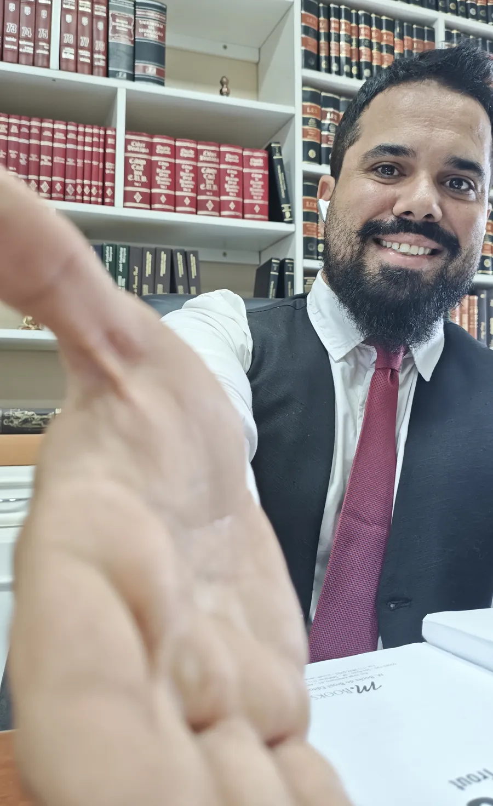

Recebi uma medida protetiva
Intimação, restrições de contato e distância, filhos, casa e as primeiras providências e o que a decisão exige.
Lucas Brito Ladeia · Advogado · OAB/MA 16.091
Recebeu uma medida protetiva?
Orientação jurídica com sigilo, calma e clareza. Presencial em Imperatriz-MA e online em todo o Brasil.
Vitrine de atendimento
Cada área tem página própria, com informações sobre o tema e o contato direto com o advogado. Sem promessa de resultado.
Intimação, restrições de contato e distância, filhos, casa e as primeiras providências e o que a decisão exige.

O que a Lei Maria da Penha prevê sobre posse e porte, entrega ou apreensão de arma, e como organizar a documentação.
Separação, união estável, convivência com filhos, pensão alimentícia e divisão de bens — orientação objetiva.
Cancelamento, atraso, overbooking, mala extraviada ou danificada: o que registrar e quais caminhos a regulamentação contempla.
Guias em e-book sobre medida protetiva, CAC e Direito de Família, em linguagem acessível. Em breve, o Guia do Passageiro nacional e internacional.
Quem atende
Lucas Brito Ladeia, advogado inscrito na OAB/MA sob o nº 16.091, com atuação desde 2016. Atendimento presencial em Imperatriz-MA e online para pessoas em todo o Brasil.
Cada caso é analisado individualmente, com exposição dos riscos e das possibilidades, sem promessa de resultado.
Ver canais de contatoJornada
Três etapas simples. Cada caso é analisado individualmente; ninguém pode garantir resultado.
Você escolhe a área e envia uma mensagem pelo WhatsApp, ou usa a página do problema. Informe o essencial e se há prazo ou audiência.
O advogado analisa a decisão, os documentos disponíveis e as restrições aplicáveis, e explica o que cada ponto significa na prática.
Indicação das providências possíveis, dos riscos relevantes e da forma de contratação, se houver interesse mútuo em seguir.
Dúvidas frequentes


Contato
Indique a área (medida protetiva, CAC, família ou passageiro). A triagem pede só o necessário para a primeira orientação.